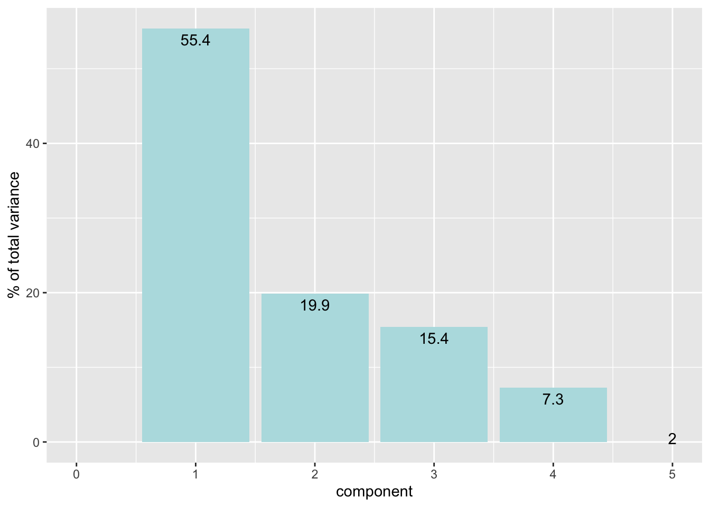
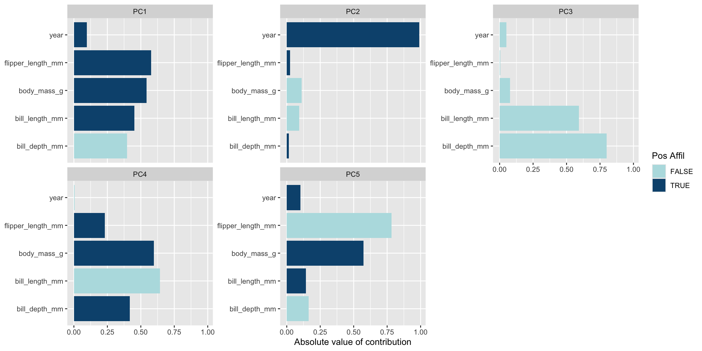
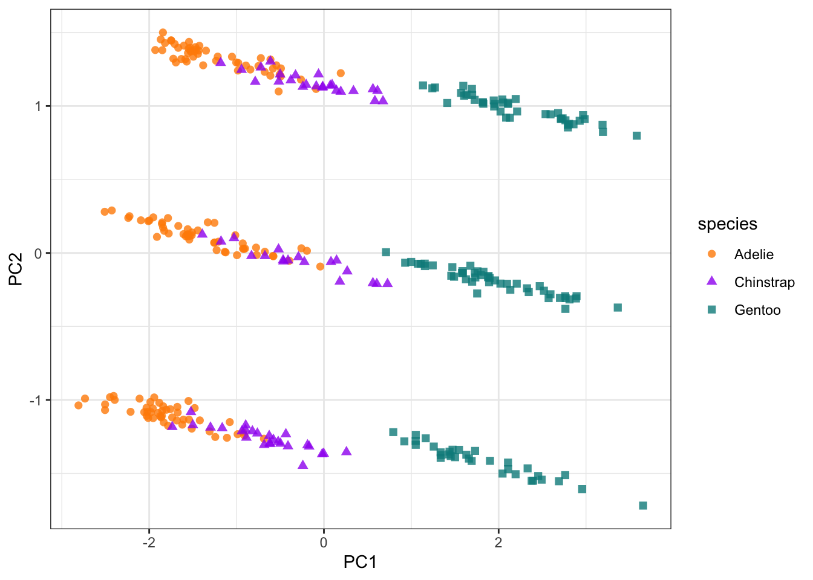
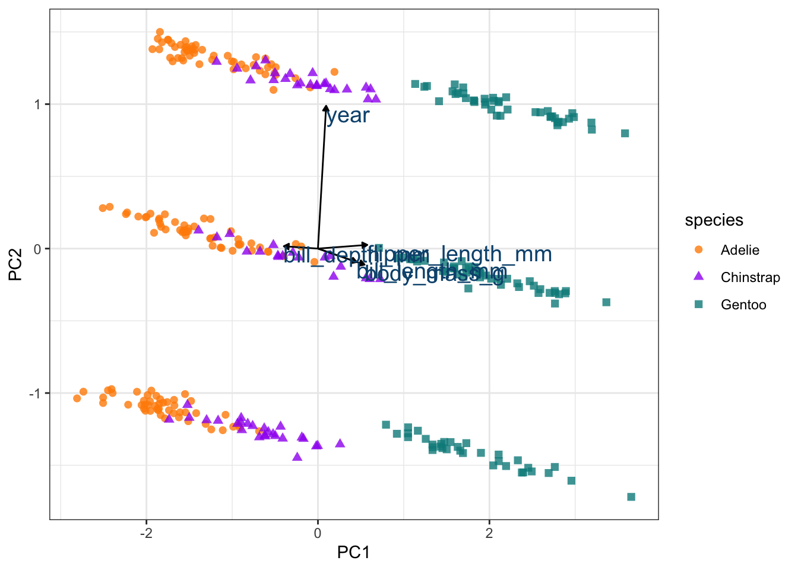
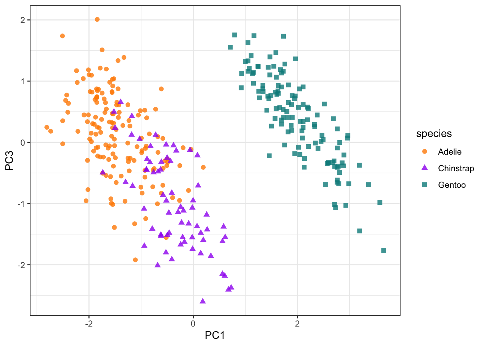
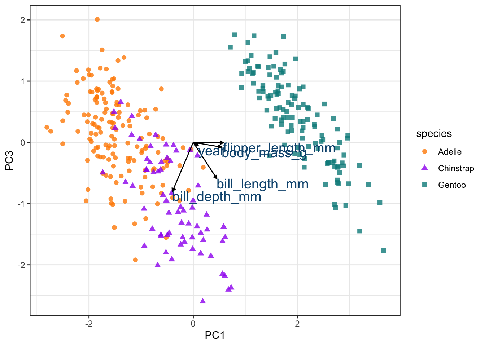

library(tidyverse)
library(tidymodels)
library(palmerpenguins)PCA Analysis using tidymodels
About the activity
Access the Quarto document here.
Download the raw file.
Open it in RStudio.
We will work our way through this quarto document together during class. The activity will cover Principal Component Analysis (PCA) using tidymodels.
Load the Packages
glimpse at the data
glimpse(penguins)Rows: 344
Columns: 8
$ species <fct> Adelie, Adelie, Adelie, Adelie, Adelie, Adelie, Adel…
$ island <fct> Torgersen, Torgersen, Torgersen, Torgersen, Torgerse…
$ bill_length_mm <dbl> 39.1, 39.5, 40.3, NA, 36.7, 39.3, 38.9, 39.2, 34.1, …
$ bill_depth_mm <dbl> 18.7, 17.4, 18.0, NA, 19.3, 20.6, 17.8, 19.6, 18.1, …
$ flipper_length_mm <int> 181, 186, 195, NA, 193, 190, 181, 195, 193, 190, 186…
$ body_mass_g <int> 3750, 3800, 3250, NA, 3450, 3650, 3625, 4675, 3475, …
$ sex <fct> male, female, female, NA, female, male, female, male…
$ year <int> 2007, 2007, 2007, 2007, 2007, 2007, 2007, 2007, 2007…Prep the Data and Perform the PCA
# set a seed. Not really necessary for PCA because it is a reproducible analysis and doesn't use random data to model the data. But it is good practice. You can use any number your heart desires.
set.seed(956)
# don't need to split data for the PCA because its an exploratory data analysis and we want to use all the data.
# Build a Recipe: this is an instruction manual does not perform any actual analysis, yet.
penguin_recipe <-
# we want to use all the data to build the analysis so we us ~ and . to include all data numeric variables
recipe( ~ ., data = penguins) %>%
# we want to maintain the categorical data so we give it a new rol of id to identify the data
update_role(species, island, sex, new_role = "id") %>%
# we want to omit rows with missing data because it can't be properly used by the PCA
step_naomit(all_predictors()) %>%
# to make sure all the data is normally distributed and centered we want to normalize the data before running PCA
step_normalize(all_predictors()) %>%
# finally we want to actually run a PCA analysis on all the data or predictors
step_pca(all_predictors(), id = "pca")
penguin_recipe── Recipe ──────────────────────────────────────────────────────────────────────── Inputs Number of variables by rolepredictor: 5
id: 3── Operations • Removing rows with NA values in: all_predictors()• Centering and scaling for: all_predictors()• PCA extraction with: all_predictors()# Prep Data: pull in the variables from the penguins data and runs PCA
penguin_prep <- prep(penguin_recipe, penguins)
penguin_prep── Recipe ──────────────────────────────────────────────────────────────────────── Inputs Number of variables by rolepredictor: 5
id: 3── Training information Training data contained 344 data points and 11 incomplete rows.── Operations • Removing rows with NA values in: bill_length_mm, ... | Trained• Centering and scaling for: bill_length_mm bill_depth_mm, ... | Trained• PCA extraction with: bill_length_mm bill_depth_mm, ... | Trainedpenguin_prep %>% tidy(id = "pca", type = "coef")# A tibble: 25 × 4
terms value component id
<chr> <dbl> <chr> <chr>
1 bill_length_mm 0.452 PC1 pca
2 bill_depth_mm -0.398 PC1 pca
3 flipper_length_mm 0.576 PC1 pca
4 body_mass_g 0.544 PC1 pca
5 year 0.0957 PC1 pca
6 bill_length_mm -0.0935 PC2 pca
7 bill_depth_mm 0.0164 PC2 pca
8 flipper_length_mm 0.0256 PC2 pca
9 body_mass_g -0.111 PC2 pca
10 year 0.989 PC2 pca
# ℹ 15 more rowspenguin_prep %>% tidy(id = "pca", type = "variance")# A tibble: 20 × 4
terms value component id
<chr> <dbl> <int> <chr>
1 variance 2.77 1 pca
2 variance 0.993 2 pca
3 variance 0.772 3 pca
4 variance 0.365 4 pca
5 variance 0.0993 5 pca
6 cumulative variance 2.77 1 pca
7 cumulative variance 3.76 2 pca
8 cumulative variance 4.54 3 pca
9 cumulative variance 4.90 4 pca
10 cumulative variance 5.00 5 pca
11 percent variance 55.4 1 pca
12 percent variance 19.9 2 pca
13 percent variance 15.4 3 pca
14 percent variance 7.30 4 pca
15 percent variance 1.99 5 pca
16 cumulative percent variance 55.4 1 pca
17 cumulative percent variance 75.3 2 pca
18 cumulative percent variance 90.7 3 pca
19 cumulative percent variance 98.0 4 pca
20 cumulative percent variance 100 5 pca # Bake Data: Extract the data from the PCA
penguin_bake <- bake(penguin_prep, new_data = NULL)
penguin_bake# A tibble: 342 × 8
species island sex PC1 PC2 PC3 PC4 PC5
<fct> <fct> <fct> <dbl> <dbl> <dbl> <dbl> <dbl>
1 Adelie Torgersen male -1.95 -1.12 0.0126 0.241 0.405
2 Adelie Torgersen female -1.42 -1.14 0.489 0.0379 0.280
3 Adelie Torgersen female -1.48 -1.06 0.209 -0.192 -0.643
4 Adelie Torgersen female -1.99 -1.01 0.0549 0.624 -0.591
5 Adelie Torgersen male -2.02 -1.08 -0.772 0.692 -0.321
6 Adelie Torgersen female -1.87 -1.11 0.411 -0.0192 0.385
7 Adelie Torgersen male -0.927 -1.22 -0.458 1.34 0.213
8 Adelie Torgersen <NA> -1.94 -0.983 0.821 0.695 -0.543
9 Adelie Torgersen <NA> -1.31 -1.21 -0.962 0.737 0.212
10 Adelie Torgersen <NA> -1.84 -1.04 0.844 -0.198 -0.0969
# ℹ 332 more rowsEvaluate the PCA
# tidy type can be: "coef", "variance",
# Plot the percent of variance explained by each principal component
penguin_prep %>%
tidy(id = "pca", type = "variance") |>
dplyr::filter(terms == "percent variance") |>
ggplot(aes(x = component, y = value)) +
geom_col(fill = "#b6dfe2") +
xlim(c(0, 5)) +
ylab("% of total variance") +
geom_text(aes(label=round(value,1)), vjust = 1.5)Warning: Removed 1 row containing missing values or values outside the scale range
(`geom_col()`).
# Plot which predictors/variables are explained in each principal component
penguin_prep |>
tidy(id = "pca", type = "coef") |>
ggplot(aes(abs(value), terms, fill = value > 0)) +
geom_col() +
facet_wrap(~component, scales = "free_y") +
scale_fill_manual(values = c("#b6dfe2", "#0A537D")) +
labs(
x = "Absolute value of contribution",
y = NULL, fill = "Pos Affil") 
# Plot the PCA
pca_plot <- penguin_bake |>
ggplot(aes(PC1, PC2)) +
geom_point(aes(color = species, shape = species),
alpha = 0.8,
size = 2) +
scale_colour_manual(values = c("darkorange","purple","cyan4")) +
theme_bw()
pca_plot
# Add the vectors for how the variables are explained by each PC
pca_wider <- penguin_prep |>
tidy(id = "pca", type = "coef") |>
pivot_wider(names_from = component, id_cols = terms)
arrow_style <- arrow(length = unit(.05, "inches"), type = "closed")
pca_plot +
geom_segment(data = pca_wider,
aes(xend = PC1, yend = PC2),
x = 0,
y = 0,
arrow = arrow_style) +
geom_text(data = pca_wider,
aes(x = PC1, y = PC2, label = terms),
hjust = 0,
vjust = 1,
size = 5,
color = '#0A537D') 
We can see that year is having a large impact of PC2 and obscuring the effect of the other metrics. So we can exclude PC2 and plot PC1 and PC3 instead.
pca_plot <- penguin_bake |>
ggplot(aes(PC1, PC3)) +
geom_point(aes(color = species, shape = species),
alpha = 0.8,
size = 2) +
scale_colour_manual(values = c("darkorange","purple","cyan4")) +
theme_bw()
pca_plot
arrow_style <- arrow(length = unit(.05, "inches"), type = "closed")
pca_plot +
geom_segment(data = pca_wider,
aes(xend = PC1, yend = PC3),
x = 0,
y = 0,
arrow = arrow_style) +
geom_text(data = pca_wider,
aes(x = PC1, y = PC3, label = terms),
hjust = 0,
vjust = 1,
size = 5,
color = '#0A537D') 
sessionInfo()R version 4.4.1 (2024-06-14)
Platform: aarch64-apple-darwin20
Running under: macOS Sonoma 14.5
Matrix products: default
BLAS: /Library/Frameworks/R.framework/Versions/4.4-arm64/Resources/lib/libRblas.0.dylib
LAPACK: /Library/Frameworks/R.framework/Versions/4.4-arm64/Resources/lib/libRlapack.dylib; LAPACK version 3.12.0
locale:
[1] en_US.UTF-8/en_US.UTF-8/en_US.UTF-8/C/en_US.UTF-8/en_US.UTF-8
time zone: America/Chicago
tzcode source: internal
attached base packages:
[1] stats graphics grDevices utils datasets methods base
other attached packages:
[1] palmerpenguins_0.1.1 yardstick_1.3.2 workflowsets_1.1.1
[4] workflows_1.2.0 tune_1.3.0 rsample_1.3.0
[7] recipes_1.3.1 parsnip_1.3.2 modeldata_1.4.0
[10] infer_1.0.8 dials_1.4.0 scales_1.3.0
[13] broom_1.0.7 tidymodels_1.3.0 lubridate_1.9.4
[16] forcats_1.0.0 stringr_1.5.1 dplyr_1.1.4
[19] purrr_1.0.4 readr_2.1.5 tidyr_1.3.1
[22] tibble_3.2.1 ggplot2_3.5.2 tidyverse_2.0.0
loaded via a namespace (and not attached):
[1] tidyselect_1.2.1 timeDate_4041.110 farver_2.1.2
[4] fastmap_1.2.0 digest_0.6.37 rpart_4.1.24
[7] timechange_0.3.0 lifecycle_1.0.4 survival_3.8-3
[10] magrittr_2.0.3 compiler_4.4.1 rlang_1.1.5
[13] tools_4.4.1 utf8_1.2.4 yaml_2.3.10
[16] data.table_1.17.0 knitr_1.50 labeling_0.4.3
[19] htmlwidgets_1.6.4 DiceDesign_1.10 withr_3.0.2
[22] nnet_7.3-20 grid_4.4.1 colorspace_2.1-1
[25] future_1.49.0 globals_0.18.0 iterators_1.0.14
[28] MASS_7.3-64 cli_3.6.4 rmarkdown_2.29
[31] generics_0.1.3 rstudioapi_0.17.1 future.apply_1.11.3
[34] tzdb_0.4.0 splines_4.4.1 parallel_4.4.1
[37] vctrs_0.6.5 hardhat_1.4.1 Matrix_1.7-2
[40] jsonlite_1.9.1 hms_1.1.3 listenv_0.9.1
[43] foreach_1.5.2 gower_1.0.2 glue_1.8.0
[46] parallelly_1.45.0 codetools_0.2-20 stringi_1.8.4
[49] gtable_0.3.6 munsell_0.5.1 GPfit_1.0-9
[52] pillar_1.10.1 furrr_0.3.1 htmltools_0.5.8.1
[55] ipred_0.9-15 lava_1.8.1 R6_2.6.1
[58] lhs_1.2.0 evaluate_1.0.3 lattice_0.22-6
[61] backports_1.5.0 class_7.3-23 Rcpp_1.0.14
[64] prodlim_2024.06.25 xfun_0.51 pkgconfig_2.0.3